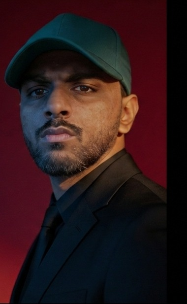

L
01 / BRAND-SIDE EXPERIENCE
Lemis Shoes
Business Head & Performance Marketing Lead
eCommerce performance marketing, brand growth and campaign oversight.
↗PROFESSIONAL PORTFOLIO · 2026
Hello, I’m Abdul Rehman.
Performance Marketing Lead focused on paid media, eCommerce growth and lead generation. I connect campaign strategy, creative testing and funnel optimization to measurable business outcomes.

My work spans paid advertising for eCommerce and lead generation businesses, from campaign planning and audience development to creative testing and performance optimization.
Across brand-side, agency and freelance roles, I focus on building a clear measurement foundation, learning from campaign data and improving how marketing connects with the wider customer journey.
Experience across in-house leadership, agency management and independent client work.
Business Head & Performance Marketing Lead
Performance Marketing Manager
Campaign work across 20+ brands
A blend of execution and strategic thinking, shaped around business objectives.
Campaign structure, audience strategy, budget management and performance optimization across paid social platforms.
01Identifying weak points in the customer journey and improving the transition from ad engagement to conversion.
02Developing testing directions for messaging and creative formats, then using campaign learning to guide iteration.
03Evaluating campaign performance and scaling opportunities with attention to return on spend and funnel efficiency.
04PERFORMANCE MARKETING / CASE 01
A case study documented in the original portfolio. Brand name, timeframe and raw campaign exports were not provided.
Concept graphic showing workflow stages, not historical ad-performance data.
Build the funnel. Test the creative. Optimize the audience. Scale what works.CASE STUDY STRATEGY · ORIGINAL PORTFOLIO
The original case study describes inefficient returns and results that were not sufficiently consistent.
The documented approach included funnel development, creative testing and audience optimization.
The original portfolio reports $35,000+ in revenue, up to 7× ROAS and a 20% increase in sales.
Reporting note: These results are reproduced from Abdul Rehman’s supplied portfolio. They are not independently audited, and this website does not present simulated dashboards as real account screenshots.
A four-stage process for approaching performance-marketing challenges.
Establish the data foundation and performance indicators.
Test concepts, messaging and content formats.
Refine the journey and address conversion barriers.
Increase investment where performance supports it.
07 CONNECT
Open to conversations about performance marketing opportunities, collaborations and brand growth projects.
Contact via WhatsApp ↗LinkedIn profile ↗